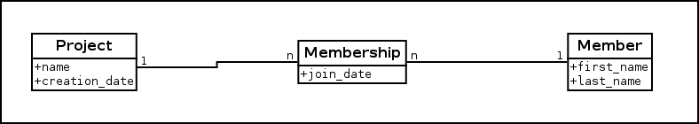

Neo4J dans la mouvance NOSQL
Qui sommes-nous ?
-
Olivier Girardot
-
Florent Biville
Et Lateral Thoughts ?
Société d'informatique composée de développeurs passionnés qui apportent leur expertise à tous ceux qui le souhaitent :)
En quelques mots
- Innovante : la société est composée uniquement de développeurs
- Transparente : chacun a le même poids de décision et accès aux mêmes informations
- Fun : projets communs, time-off ...
Plan
-
NOSQL ?
-
Les graphes dans tout ça ?
-
Neo4J
-
Cohabitation avec l'existant
NOSQL ? ça sonne un peu comme ça...
...ou comme ça

NOSQL = Not Only SQL
- Le terme date de 1998 et est popularisé en 2009
- Il regroupe des bases de données très différentes
- Éloigné du modèle relationnel des SGBDR (Oracle, PostgreSQL etc.)
- Souvent associé à des modèles échelonnables, mais pas que.
<Flashback about="le modèle relationnel">
L'hégémonie relationnelle
Le modèle relationnel a éte défini par Edgar Codd il y a 40 ans ...

... et il domine toujours (ORM mon amour).
L'hégémonie relationnelle
... et il a ses limites :
- ACID et SQL coûtent cher
- Le seul vrai moyen efficace de rendre échelonnable une BDD relationnelle, c'est le sharding !
- Le SHARDING c'est dur ! et ça dépend beaucoup du métier...
- Le théorème CAP de Brewer est inévitable
ACID ?
- Atomicity
- Chaque transaction est vue comme une opération unique. Toutes ou aucune des modifications sont persistées (commit/rollback), aucun état intermédiaire n'est permis.
- Consistency
- Chaque état atteint par le système de persistance est stable et valide.
- Isolation
- Chaque transaction a son propre état, indépendant des autres transactions en cours d'exécution.
- Durability
- Tout résultat committé doit persister en permanence même après crash.
Sharding ?
Partitionnement horizontal des données, i.e. par lignes plutôt que par colonne, sur un critère donné.
L'hégémonie relationnelle (on reprend)
... et il a ses limites :
- ACID et SQL coûtent cher
- Le seul vrai moyen efficace de rendre échelonnable une BDD relationnelle, c'est le sharding !
- Le SHARDING c'est dur ! et ça dépend beaucoup du métier...
- Le théorème CAP de Brewer est inévitable
Conclusion ?
On a beaucoup progressé pour faire monter en charge et répliquer nos applications, beaucoup moins avec les systèmes persistant les données qu'elles manipulent !
Indice : on peut faire mieux ;)
La famille NOSQL
- Key-Value Store :
- Redis
- BerkeleyDB
- (et dans un sens Cassandra/RIAK)
- Document Oriented :
- Column oriented :
- les versatiles :
- Tokyo Cabinet
- et Kyoto Cabinet
Bien sûr il n'y a ici que les principaux acteurs du genre.
Key/Value
IMG KEY/VALUE
Document
IMG DOCUMENT
Column
IMG Column
Last but not least...
Les bases de données Graphes :
- AllegroGraph
- Bigdata
- CloudGraph
- Cytoscape
- DEX
- Filament
- GraphBase
- Graphd
- Horton
- HyperGraphDB
- InfiniteGraph
- InfoGrid
- Neo4j
- OrientDB
- OQGRAPH
- sones GraphDB
- VertexDB
- Virtuoso Universal Server
- R2DF
- GiraffeDB
Et si on s'orientait vers ça ?

Graphe, vous avez dit graphe ?
Le graphe le plus simple du monde
Un graphe un peu plus intéressant
Autres modes de représentations
Sous forme de matrice d'adjacence :
Autres modes de représentations
Sous forme de liste d'adjacence : tableau de liste de sommets
Recherche sur graphe (I/III)
Breadth-first search

Propriétés intéressantes:
- Complexité: O(n) où n=somme du nombre de vertices et d'egdes
- Tous les plus courts chemins depuis le vertex racine sont découverts
Recherche sur graphe (II/III)
Depth-first search

Propriétés intéressantes:
- Classification des edges:
- tree edges
- back edges
- forward edges
- cross edges
- Tri topologique possible
Recherche sur graphe (III/III)
Tri topologique avec une depth-first search (très fortement inspiré de la figure 22.7 de "Introduction to Algorithms", chapitre 22.4)
Avant
Après
Note: cela ne fonctionne qu'avec des graphes acycliques orientés.
Recherche du plus court chemin
TODO
Concepts I · 3 fondamentaux à retenir
-
Noeud (vertex, node)
La forme la plus simple d'un graphe.
Node iAmANode = graphDatastore.createNode();
-
Relation (relationship, edge)
Permet d'organiser les noeuds.
iAmANode.createRelationshipTo(anotherNode, ExampleRelationships.ROMANTIC);
-
Propriété (property, key/value pairs)
Enrichit les noeuds et les relations.
iAmANode.setProperty("having", "a property!");
BDD orientée graphe ?
- Données fortement inter-connectées
- Les Graphes représentent bien un modèle Objet
- Est plus facilement scalable qu'un SGBDR, pas de jointures coûteuses
- Modèle rempli d'algorithmes efficaces
et bien connus en Recherche Opérationnelle
- Flexible et souvent Schema-Less
Pourquoi Neo4J ?
- Base de données écrite en Java
- Projet(s) open-source (licence AGPL)
- Supportée commercialement par Neo Technology
- Rapprochement récent de SpringSource (filiale de VMWare)
Roadmap
- Version stable: 1.7.2
- 1.8 dans les cartons
Exemple I · création d'un graphe
Exemple II · traversée de graphe
Quizz: combien de noeuds sont retournés ?
Exemple III · index
Implémentation embarquée par défaut: Lucène.
Les index supportent également le pseudo-requêtage sur les valeurs indexées (ex: index.query("key","*e*")).
Requêtage
TODO Cypher/Gremlin
Présentation de SpringData
L'écosystème Spring
Spring est à la base un framework d'injection de dépendance (appelé maintenant Spring Core) simplifiant les développements et la testabilité des projets Java/JEE.
L'écosystème s'est agrandi bien au-delà de l'injection de dépendance pour compter :
- Spring Security
- Spring Batch
- Spring MVC
- ...
- et aussi SpringData qui nous intéresse aujourd'hui

Projet ombrelle visant à faciliter l'intégration de la couche d'accès aux données aux applications se reposant sur Spring Core.
Quelques projets existants
- SpringData/JPA
- SpringData/MongoDb
- SpringData/Redis
- SpringData/Neo4J
Les fonctionnalités communes entre les tous les projets SpringData/* sont regroupées dans Spring Data Commons.
Aperçu
But
- réaliser l'import du graphe
- visualiser le graphe
- le requêter
TODO

Cohabitation avec l'existant
Entités partielles
Permet de partager la persistence d'une entité entre Neo4J et un autre store.
Exemple (tiré de “Good Relationships, The Spring Data Neo4j Guide Book”)
←
→
/
#